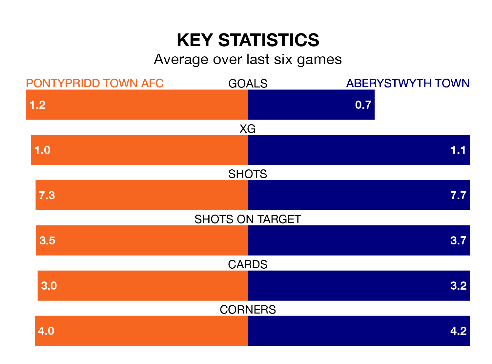

Aberystwyth Town travel to Ynysangharad Park for Tuesday's late match against Pontypridd Town AFC looking to bounce back from defeat last time out in the Welsh Premier League.
The Seasiders, who sit zero in the league after 29 games, fell to a 3-0 home defeat to Penybont on Saturday.
They face a Pontypridd Town side who also lost their last match, a 1-0 defeat to Colwyn Bay, and who sit zero in the table.
With 23 goals in 29 games so far this season, Pontypridd Town are the league's joint--4th-lowest scorers with 0.8 goals per game. But they are conceding fewer than average too, letting in 35 goals at a rate of 1.2 per game.
Aberystwyth are also below average scorers, with 0.8 goals per game, compared to a league average of 1.5. They have conceded 1.9 goals per game.
In the last 10 years, Pontypridd Town and Aberystwyth have played each other on seven occasions. Pontypridd Town won four of them, Aberystwyth one, and they drew twice.
On average, the Dragons scored 1.6 goals and the Seasiders 1.0 in those matches.
Their last meeting was on December 26, when Pontypridd Town won 2-0 at home.
The Dragons are in mixed form in the Welsh Premier League, with two wins and two draws from their last six games.
With a win and two draws over that period, Town's form is worse – they have taken five points from 18, compared to the hosts' eight.
Updated: 14:47 (UTC), 09/04/24